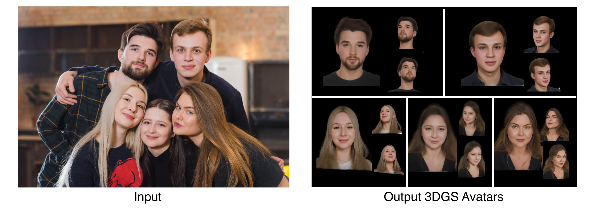
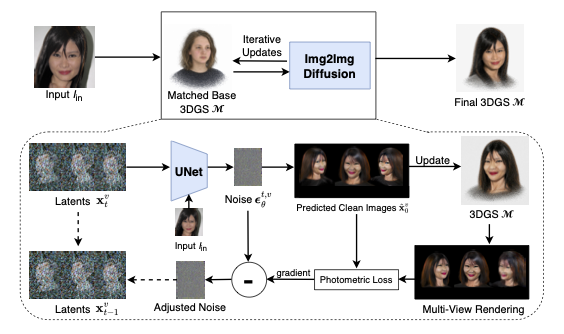
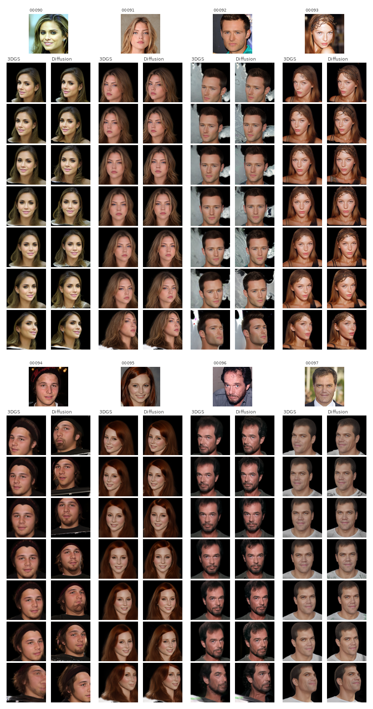

In Submission

Given a single unconstrained in-the-wild photo, SplatShot generates a photorealistic 3D Gaussian Splatting face avatar renderable from arbitrary viewpoints — no per-subject training required.
We present SplatShot, a training-free method for generating photorealistic 3D face avatars from a single unconstrained photograph. Our approach represents faces as 3D Gaussian Splatting (3DGS) models that can be rendered from arbitrary novel viewpoints. Starting from a pre-built base 3DGS model selected via DINO and skin-tone feature matching, we iteratively refine it through a 3DGS-guided diffusion denoising loop: at each DDIM timestep, a diffusion UNet conditioned on the target identity (via IP-Adapter and ControlNet) predicts per-view clean images, which are used to refit the 3DGS; the photometric loss between re-renders and diffusion predictions is backpropagated into the noise estimate to enforce multi-view 3D consistency. We further introduce Semantic Delta Injection (SDI), which isolates identity-specific appearance by comparing two UNet passes and injects the delta to better capture fine-grained facial details. SplatShot requires no test-time training and produces a complete 3DGS avatar in approximately 10–15 minutes.

A DINO + skin-tone matcher selects the closest pre-built 3DGS face model from a library of NeRSemble subjects, providing a strong geometric prior for the target identity.
Over 25 DDIM steps, per-view diffusion predictions (conditioned via IP-Adapter-Plus-Face + ControlNet) refit the 3DGS. Photometric loss is backpropagated into the noise estimate, enforcing 3D consistency across 48 views.
A second UNet pass on the base identity isolates identity-specific appearance noise. The scaled delta is injected to steer the generation precisely toward the target face while preserving geometry.

Qualitative comparison with state-of-the-art methods. SplatShot produces consistent multi-view avatars with accurate identity and photorealistic appearance.
@inproceedings{liang2025splatshot,
title = {SplatShot: 3D Face Avatar Generation from a Single Unconstrained Photo},
author = {Liang, Hao and Ge, Zhixuan and Majee, Soumendu and Li, Joanna
and Veeraraghavan, Ashok and Balakrishnan, Guha},
booktitle = {Advances in Neural Information Processing Systems},
year = {2026}
}